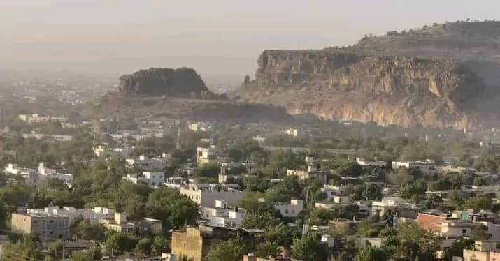

En préparation
Trois outils que JA IMAGE construit pour toute la communauté du cinéma malien — cinéastes, techniciens, productions.
Une base de données complète des lieux de tournage au Mali : paysages naturels, urbains et historiques. Recherche par région, type de décor ou mot-clé, avec photos HD et conditions d'accès pour chaque fiche.
Vous avez un lieu à proposer ? Contactez-nous.
Un répertoire des réalisateurs, scénaristes, acteurs et techniciens du Mali — un espace de visibilité et de mise en réseau qui facilite les partenariats artistiques et techniques.
Vous êtes cinéaste ? Soumettez votre profil.
Une collection d'images authentiques illustrant la culture, les paysages et la vie quotidienne au Mali, produites par des photographes locaux. Une partie des revenus soutient directement les artistes maliens.
Photographe malien ? Rejoignez le projet.
Pourquoi ces outils
Au-delà de la formation et du festival, Association Culturelle JA construit les outils qui manquent au secteur : savoir où tourner, savoir qui appeler, et pouvoir montrer le Mali en images justes.
